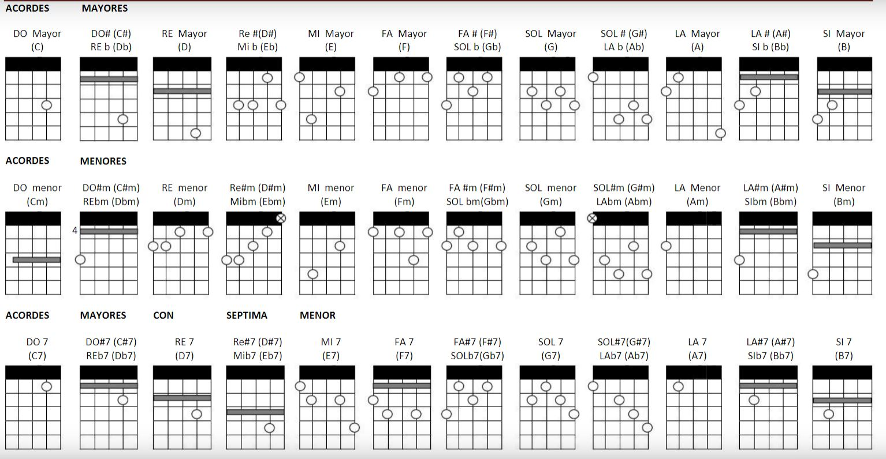

O instrumento charango é tocado com técnicas de repiques e dedilhados, para aprender é necessário praticar, existem canais ótimos no youtube que ensinam essas técnicas, um cana bom para aprender é o Roman tecutli, além de você aprender as técnicas de como tocar charango, nele também tem tutoriais de algumas músicas.
